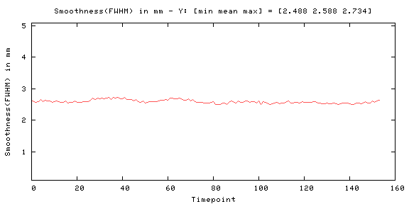

Odd-even difference image
| -313 | 317 |
| image min: -313, image max: 317 |
Mean image
| 0 | 1941.32 |

|
|
| image min: 0, image max: 2024.03 |
Standard Deviation image
| 0 | 8.8711 |

|
|
| image min: 0, image max: 8.8711 |
SFNR image
| 0 | 662.108 |

|
|
| image min: 0, image max: 662.108 |
Acquisition parameters
| dimensions | 80x80x30x157 |
| spacing | 3mmx3mmx3.99mmx2000ms |
| gap | 0mmx0mmx0.49mmx0ms |
| scanner | AWP66112 |
| psdname | %SiemensSeq%\ep2d_bold |
| examnumber | 18 |
| studyid | QA |
| seriesnumber | 5 |
| runnumber | 1 |
| scanningsequence | EP |
| sequencevariant | SK |
| magneticfield | 3 |
| description | BOLD_p2 |
| scandate | 2017-01-03 |
| scantime | 11:15:05 |
| tr | 2000 |
| te | 35.000000 |
| flipangle | 90 |
| prescribedslicespacing | 3.99 |
| frequencydirection | 1 |
| acquisitionmatrix | 80 80 |
| bandwidth | 185.2 |
| transmitcoilname | Body |
| institution | Dartmouth College - PBS |
| examdescription | dbic^QA |
| scanner | AWP66112 |
| scannermanufacturer | SIEMENS |
| scannermodelname | Prisma |
| fieldofview | 240 240 |
| psdname | %SiemensSeq%\ep2d_bold |
| protocolname | BOLD_p2 (BOLD_p2) |
| institutionaddress | Maynard 3,Hanover,NH,US,03755 |
| institutionaldepartmentname | Department |
| scanoptions | FS |
| mracquisitiontype | 2D |
| sequencename | *epfid2d1_80 |
| angioflag | N |
| numaverages | 1 |
| imagingfrequency | 123.252609 |
| imagednucleus | 1H |
| spacingbetweenslices | 3.9900000049744 |
| numphaseencodingsteps | 79 |
| echotrainlength | 39 |
| percentsampling | 100 |
| percentphasefieldofview | 100 |
| scannerserialnumber | 66112 |
| softwareversions | syngo MR E11 |
| inplanephaseencodingdirection | COL |
| variableflipangleflag | N |
| sar | 0.05562418006856 |
| dBdt | 0 |
| acquisitionnumber | 1 |
| instancenumber | 1 |
| samplesperpixel | 1 |
| photometricinterpretation | MONOCHROME2 |
| rows | 480 |
| columns | 480 |
| bitsallocated | 16 |
| bitsstored | 12 |
| highbit | 11 |
| pixelbandwidth | 2315 |
| otherinfo | |
| sliceorder | 2,4,6,8,10,12,14,16,18,20,22,24,26,28,30,1,3,5,7,9,11,13,15,17,19,21,23,25,27,29 |